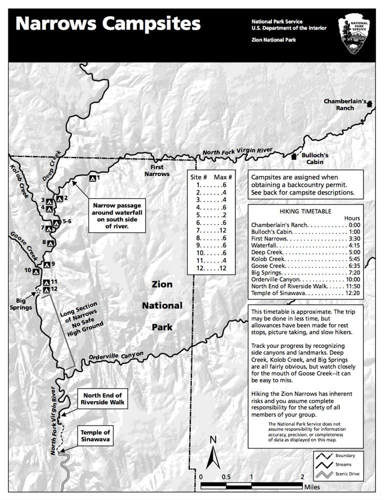

The Zion Narrows is one of the most iconic hikes in the world, featuring towering sandstone walls, a winding river, and breathtaking scenery. While many visitors hike the Narrows from the bottom-up as a day hike, the top-down route offers a more immersive and challenging experience.
Hiking the Zion Narrows top-down in one day is a strenuous 16-mile trek through the Virgin River, requiring permits, endurance, and proper gear. This guide covers everything you need to know to tackle this epic adventure.
Zion Narrows Top-Down Hike Overview
- Distance: 16 miles (26 km) one-way
- Duration: 10–14 hours (depending on pace & river conditions)
- Elevation Change: ~1,500 ft descent
- Difficulty: Strenuous
- Permit Required: Yes (limited availability)
- Best Time to Hike: Late spring to early fall (when water levels are safe)
Why Hike the Narrows Top-Down?
The top-down route through the Narrows is considered by many to be the best way to experience this spectacular canyon. Here's why:
- More solitude: Fewer people than the bottom-up day hike
- Complete experience: You'll see the entire length of the Narrows
- Better scenery: The upper sections have the most dramatic narrows
- Adventure factor: More challenging and rewarding than the day hike
Permit Information
A permit is required to hike the Narrows from the top-down, whether as a day hike or overnight. Only 40 people per day are permitted to start the top-down hike.
Permit Details
- Available through a lottery system 3 months in advance
- $5 application fee per group
- $15 per person if selected
- Last-minute permits sometimes available the day before

The Narrows requires permits to protect this fragile environment
When to Hike the Narrows
The best time to hike the Narrows top-down is from late May through September when:
Optimal Conditions
- Water temperatures are warmer
- Water levels are typically lower
- Longer daylight hours
- Park shuttle is running
Avoid These Times
- Flash flood risk (summer thunderstorms)
- Winter (cold water temps, risk of hypothermia)
- Spring runoff (high, dangerous water levels)
Essential Gear
Having the right gear is crucial for a safe and enjoyable Narrows hike:
Footwear
Neoprene socks + sturdy canyoneering shoes or boots with good traction

Trekking Poles
Essential for stability in the river (rent or bring your own)

Dry Bags
Waterproof bags for electronics and extra clothing
The Hike: What to Expect
The top-down hike through the Narrows can be broken down into four main sections:
This section follows the Virgin River through open terrain before reaching the canyon walls. Mostly walking on dry land or shallow water.
The heart of the hike where the canyon walls close in. You'll be walking in the river almost the entire time, with sections ranging from ankle-deep to waist-deep.
The most famous section with towering walls just 20-30 feet apart. The river is deepest here, often waist-high.
The final section where the canyon opens up and you'll join the crowds of bottom-up hikers. Paved Riverside Walk leads to the shuttle.
Final Thoughts
Hiking the Zion Narrows from the top-down in one day is an unforgettable adventure that requires preparation but rewards you with some of the most spectacular canyon scenery in the world. With proper planning, gear, and respect for the river's power, it's an experience you'll remember forever.
Important Safety Note
Always check weather conditions and flash flood potential before your hike. The Narrows can be extremely dangerous during rain storms due to the risk of flash flooding.